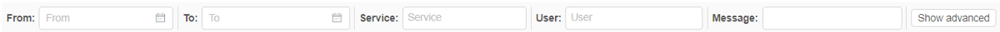
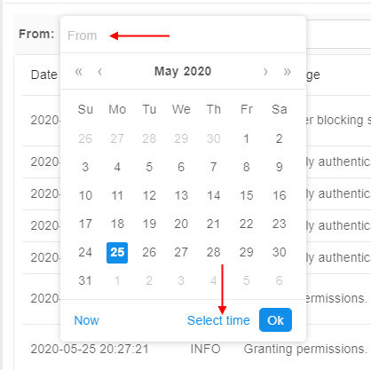
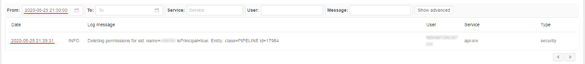
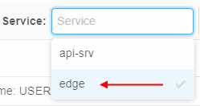
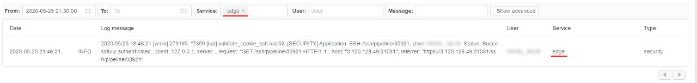
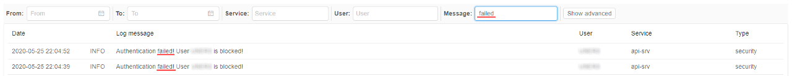
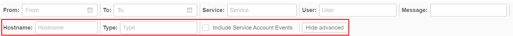

12.12. System logs
User shall have ROLE_ADMIN to view system security logs.
The System Logs tab contains the full list of security trail events.
Each record in the logs list contains:
| Field | Description |
|---|---|
| Date | The date and time of the log event |
| Log status | The status of the log message (INFO, ERROR, etc.) |
| Log message | Description of the log event |
| User | User name who performed the event |
| Service | Service name that registered the event (api-srv, edge) |
| Type | Log message type (currently, only security type is available) |
Filters
By default, in the list all logs are displayed from new to old.
For the more convenient search of the desired logs, there are filters over the logs list:

You may combine them in any order for your needs.
Date filter
To restrict the list of logs for a specific date/time interval - use the From and To controls.
For example, to view logs for all events that were today after 21:30:
- Click the From control:

Click the Select time button - Select the desired time (the left column for hours, middle - for minutes, right - for secs):

Click the Ok button - The logs list will be filtered:

Service filter
To restrict the list of logs for a specific service - use the Service control. You may select the desired service from the dropdown list, e.g.:

The logs list will be filtered automatically:

Multi-select is supported.
User filter
To restrict the list of logs for a specific user(s) - use the User control. You may select the desired user from the dropdown list. Multi-select is supported.
Message filter
To find the log by its event message (or its part) - use the Message field. Just click this field, specify the desired text and press the Enter key, e.g.:

Advanced filters
To open advanced filters click the Show advanced button. Additional filters will appear:

Hostname filter
To restrict the list of logs for a certain service host(s) - use the Hostname control. You may select the desired host from the dropdown list.
Multi-select is supported.
Type filter
To restrict the list of logs for a certain log message type(s) - use the Type control. You may select the desired type from the dropdown list.
Note: currently, only security type is available.
Show service account events
The Include Service Account Events checkbox allows to show/hide log message from the service account (main admin user). Since from this account many messages are received, much more than from other users, by default these messages are hidden.